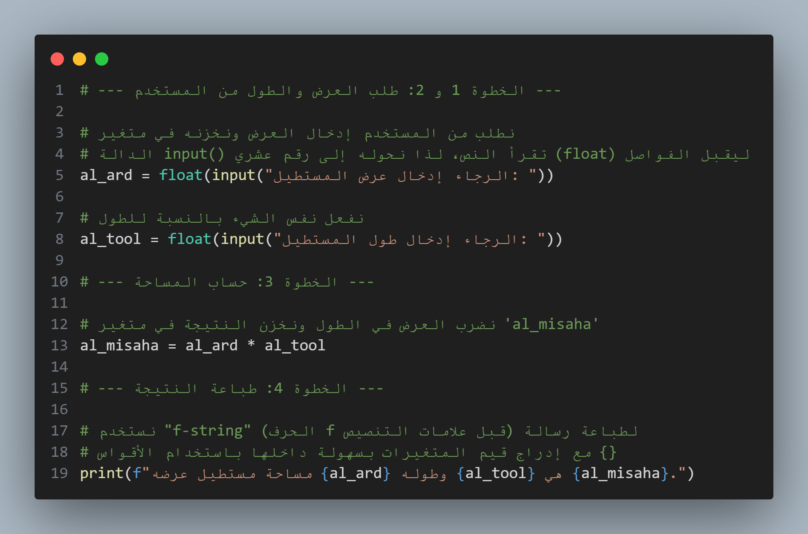
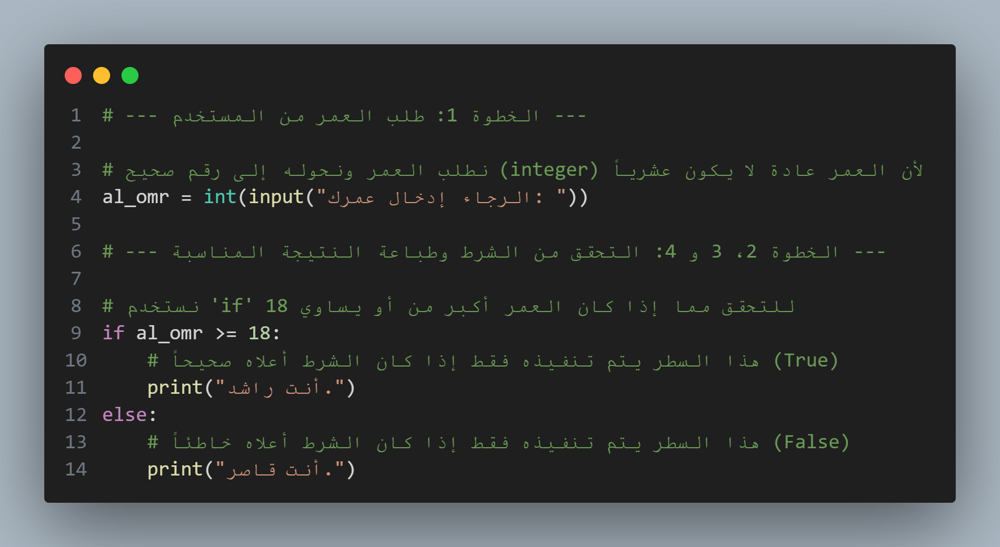
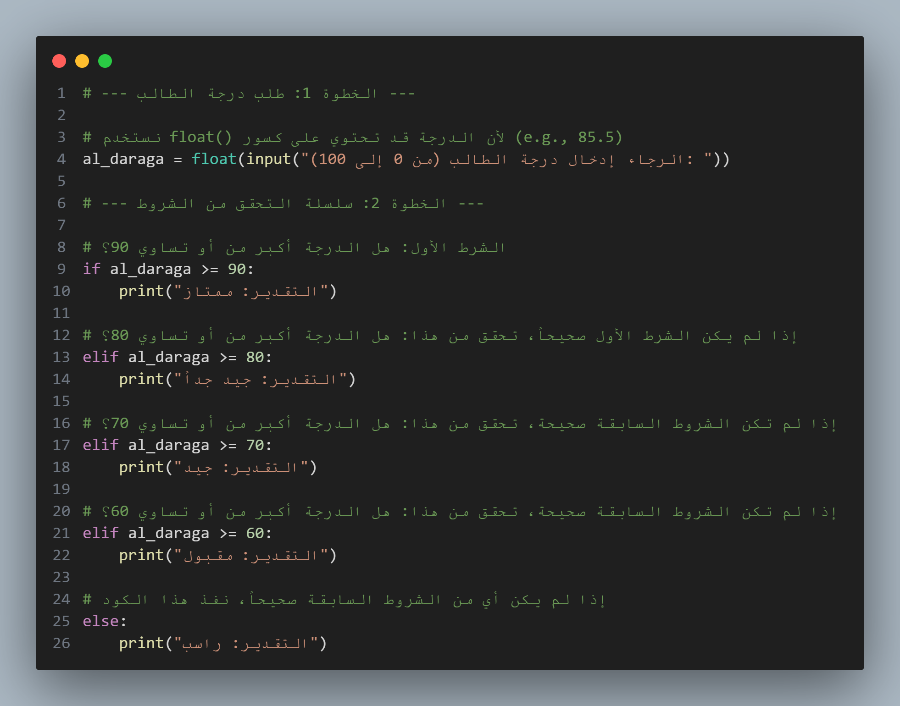
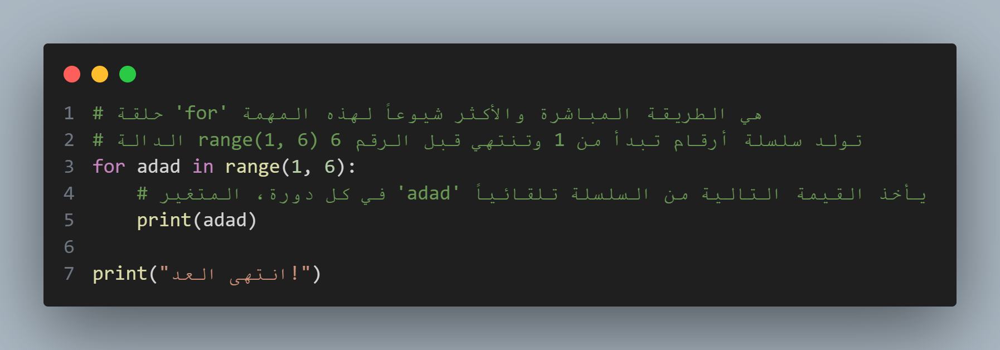
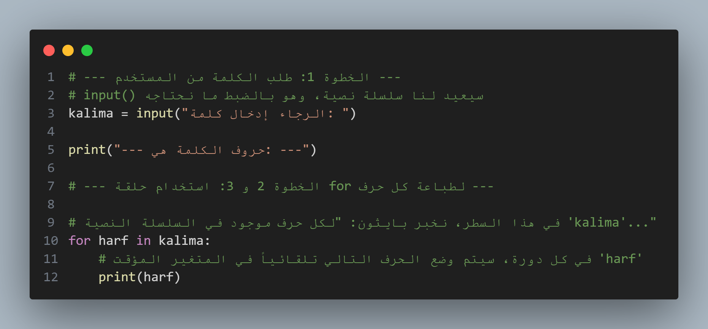
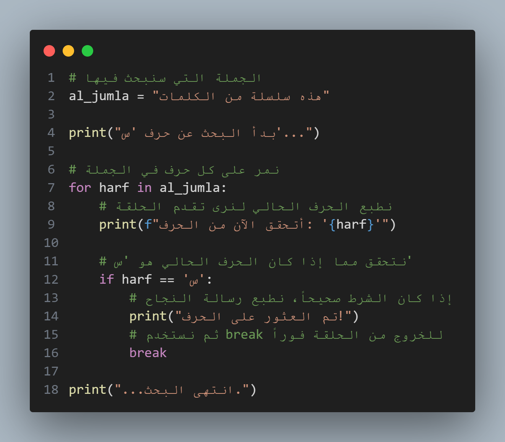
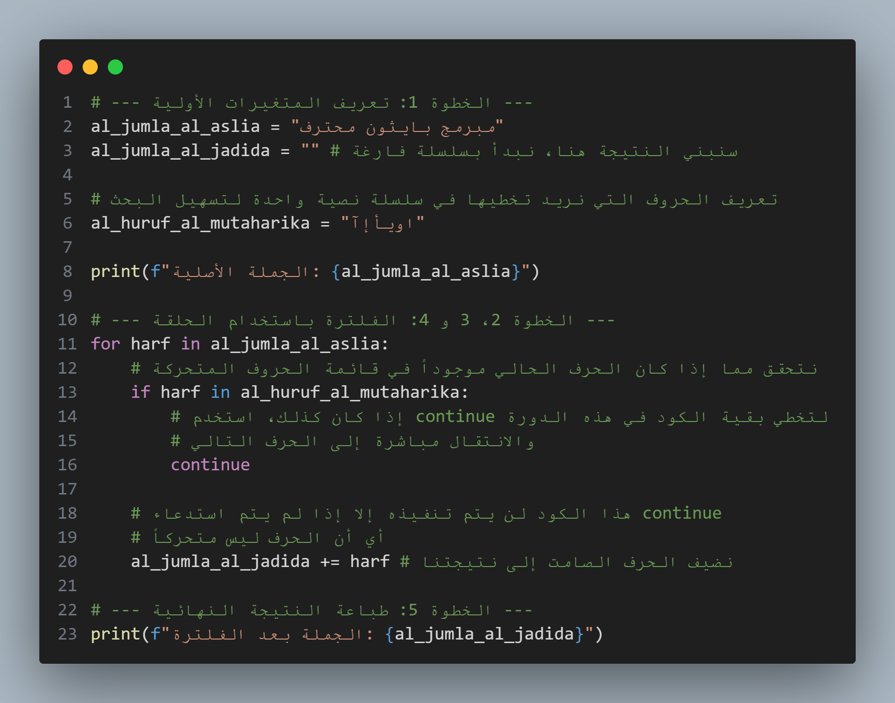
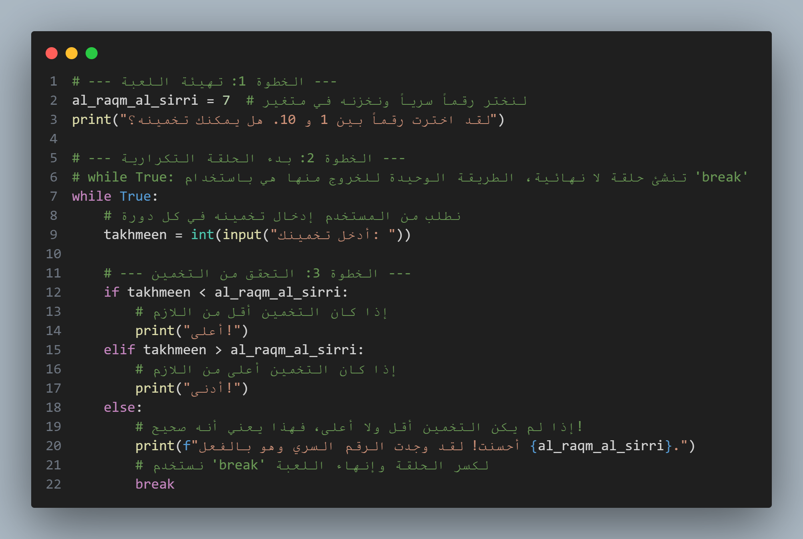

التمرين 1: حساب مساحة مستطيل
الهدف: إتقان قراءة المُدخلات من المستخدم، تحويل أنواع البيانات، إجراء عمليات حسابية بسيطة، وطباعة النتائج بشكل منسق.
المطلوب:
اكتب برنامجاً بلغة بايثون يقوم بالتالي:
- يطلب من المستخدم إدخال عرض المستطيل.
- يطلب من المستخدم إدخال طول نفس المستطيل.
- يحسب مساحة المستطيل (المساحة = الطول × العرض).
- يعرض النتيجة النهائية بصيغة واضحة، على سبيل المثال: "مساحة مستطيل عرضه 5.5 وطوله 10.0 هي 55.0".
خذ بضع لحظات لكتابة الكود. لا تقلق إن لم يكن مثالياً، فالمهم هو المحاولة!
الحل والشرح
إليك حل ممكن بلغة بايثون، مع استخدام أسماء متغيرات باللغة العربية لزيادة الوضوح:

شرح مفصّل
-
al_ard = float(input("..."))-
input("..."): هذه هي الدالة التي تتفاعل مع المستخدم. تعرض الرسالة بين القوسين ("الرجاء إدخال...") في الشاشة وتنتظر من المستخدم أن يكتب شيئاً ويضغط على "Enter". -
نقطة مهمة: الدالة
input()تُرجع دائماً نصاً (string)، حتى لو كتب المستخدم أرقاماً! لا يمكننا إجراء عمليات حسابية على النصوص. -
float(...): هذه هي الدالة التي تحول النص إلى رقم عشري (floating-point number). على سبيل المثال، النص"10.5"يصبح الرقم10.5. نستخدمfloatبدلاً منint(للأرقام الصحيحة) تحسباً لوجود أبعاد تحتوي على فواصل عشرية. -
al_ard = ...: هذه عملية الإسناد (assignment). نحن ننشئ "صندوقاً" في الذاكرة، نعطيه الاسمal_ard، ونخزن فيه القيمة التي أدخلها المستخدم بعد تحويلها.
-
-
al_misaha = al_ard * al_tool- هنا، نُعرّف متغيراً جديداً اسمه
al_misaha. -
العامل
*يقوم بعملية ضرب القيمتين المخزنتين في المتغيرينal_ardوal_tool. -
يتم تخزين (إسناد) نتيجة هذه العملية الحسابية في المتغير
al_misaha.
- هنا، نُعرّف متغيراً جديداً اسمه
-
print(f"...")-
print()هي الدالة المسؤولة عن عرض المعلومات على الشاشة. -
الحرف
fقبل علامات التنصيص مباشرةً يُفعّل أداة قوية جداً تسمى f-string. تسمح هذه الأداة بدمج المتغيرات مباشرة داخل النص عن طريق وضعها بين قوسي مجموعة{}. -
يقوم بايثون تلقائياً باستبدال
{al_ard}و{al_tool}و{al_misaha}بالقيم المخزنة فيها عند الطباعة. هذه الطريقة أكثر نظافة وسهولة في القراءة من محاولة "لصق" أجزاء من النصوص والمتغيرات معاً.
-
✅ نقاط رئيسية ونصيحة للامتحان
-
النقاط الأساسية التي يجب تذكرها:
-
input()لطلب المُدخلات،print()لعرض المخرجات. -
دائماً حوّل البيانات القادمة من
input()باستخدامint()أوfloat()قبل إجراء أي عملية حسابية. هذا خطأ شائع جداً يقع فيه المبتدئون. -
استخدم أسماء متغيرات واضحة وذات معنى (مثل
al_ard,al_misaha) لجعل الكود الخاص بك سهل الفهم.
-
-
نصيحة للامتحان:
-
إذا طُلب منك كتابة برنامج في الامتحان، أضف تعليقات (باستخدام
الرمز
#) كما فعلتُ في الحل. هذا يُظهر للمصحح أنك تفهم كل خطوة من منطقك، حتى لو ارتكبت خطأً بسيطاً في الصيغة.
-
إذا طُلب منك كتابة برنامج في الامتحان، أضف تعليقات (باستخدام
الرمز
التمرين 2: التحقق من الأهلية العمرية
الهدف: استخدام if و
else لاتخاذ قرار بناءً على شرط، مع تعزيز مهارات الإدخال
والتحويل واستخدام عوامل المقارنة.
المطلوب:
اكتب برنامجاً بلغة بايثون يقوم بالتالي:
- يطلب من المستخدم إدخال عمره.
- يتحقق مما إذا كان العمر 18 عاماً أو أكثر.
- إذا كان الشرط صحيحاً (العمر >= 18)، يطبع رسالة: "أنت راشد."
- وإلا (إذا كان الشرط خاطئاً)، يطبع رسالة: "أنت قاصر."
خذ وقتك في التفكير وكتابة الحل.
الحل والشرح
إليك الحل النموذجي في بايثون:

شرح مفصّل
-
al_omr = int(input(...))-
كما في التمرين السابق، نستخدم
input()لأخذ المعلومة من المستخدم. -
لكن هذه المرة، استخدمنا
int()بدلاً منfloat(). لماذا؟ لأن العمر يُعبّر عنه عادةً بعدد صحيح (e.g., 17, 18, 25) وليس عدداً عشرياً (e.g., 17.5). اختيار النوع الصحيح للبيانات ممارسة جيدة في البرمجة.
-
كما في التمرين السابق، نستخدم
-
if al_omr >= 18:-
if: هذه الكلمة المفتاحية تعني "إذا كان". إنها بداية البنية الشرطية. -
al_omr >= 18: هذا هو الشرط (condition). إنه عبارة عن مقارنة سيُقيّمها بايثون ويحدد ما إذا كانت نتيجتهاTrue(صحيح) أمFalse(خاطئ). -
>=: هذا هو عامل المقارنة (comparison operator) ويعني "أكبر من أو يساوي". (هناك عوامل أخرى مثل==للمساواة،!=لعدم المساواة،<أصغر من،>أكبر من). -
:: النقطتان الرأسيتان في نهاية السطر إلزاميتان. وهما تعنيان "إذن قم بتنفيذ ما يلي:".
-
-
المسافة البادئة (Indentation)
-
لاحظ أن السطر
print("أنت راشد.")مزاح قليلاً إلى اليمين. هذه المسافة البادئة (عادة 4 مسافات أو ضغطة Tab) مهمة جداً في بايثون. إنها الطريقة التي يفهم بها بايثون أن هذا السطر يتبع للـif. أي أن هذا السطر لن يتم تنفيذه إلا إذا كان الشرط صحيحاً.
-
لاحظ أن السطر
-
else:-
else: هذه الكلمة تعني "وإلا" أو "في الحالات الأخرى". يتم تنفيذ الكود الذي يتبعها فقط عندما يكون شرط الـifالأصلي خاطئاً (False). -
الـ
elseلا تأخذ شرطاً بنفسها، هي ببساطة تغطي جميع الحالات التي لم يغطيها الـif. -
لاحظ وجود النقطتين الرأسيتين
:والمسافة البادئة للسطر الذي يتبعها، تماماً مثلif.
-
✅ نقاط رئيسية ونصيحة للامتحان
-
النقاط الأساسية التي يجب تذكرها:
-
البنية الأساسية هي:
if condition: ... else: ... -
النقطتان الرأسيتان
:والمسافات البادئة إجبارية وليست اختيارية. نسيانها يسبب خطأ في البرنامج (SyntaxError). -
الشرط يجب أن يكون شيئاً يمكن تقييمه كـ
TrueأوFalse.
-
البنية الأساسية هي:
-
نصيحة للامتحان:
- في الامتحانات، غالباً ما يتم اختبار فهمك للمسافات البادئة. تأكد من أن الكود الذي تكتبه منظم بشكل صحيح.
-
فكر دائماً في "الحالات الحدية" (edge cases). في مثالنا، ماذا
يحدث لو أدخل المستخدم 18 بالضبط؟ بفضل استخدام
=>، سيعتبره البرنامج "راشد"، وهو السلوك الصحيح.
التمرين 3: نظام تقدير الدرجات
الهدف: استخدام سلسلة if/elif/else كاملة
للتعامل مع حالات متعددة، والتدرب على الشروط التي تتضمن نطاقات من
الأرقام.
المطلوب:
اكتب برنامجاً بلغة بايثون يقوم بالتالي:
- يطلب من المستخدم إدخال درجة طالب (رقم من 0 إلى 100).
-
بناءً على الدرجة، يطبع التقدير المناسب وفقاً للقواعد التالية:
- إذا كانت الدرجة 90 أو أعلى، يطبع "التقدير: ممتاز".
- إذا كانت الدرجة بين 80 و 89، يطبع "التقدير: جيد جداً".
- إذا كانت الدرجة بين 70 و 79، يطبع "التقدير: جيد".
- إذا كانت الدرجة بين 60 و 69، يطبع "التقدير: مقبول".
- إذا كانت الدرجة أقل من 60، يطبع "التقدير: راسب".
فكر جيداً في ترتيب الشروط. هذا مهم جداً في هذا التمرين.
الحل والشرح
إليك طريقة فعالة لحل هذه المسألة:

شرح مفصّل
-
elif al_daraga >= 80:-
elif: هذه هي الإضافة الجديدة. بايثون يقوم بالتحقق من هذا الشرط فقط إذا كان شرطifالذي يسبقه خاطئاً (False). -
المنطق التسلسلي (وهو سر الحل!):
- لنفترض أن الطالب حصل على درجة
85. -
يسأل بايثون: هل
85 >= 90؟ الجوابFalse. -
لأن شرط
ifالأول كان خاطئاً، ينتقل بايثون إلى الـelif. -
يسأل بايثون: هل
85 >= 80؟ الجوابTrue. -
بما أن الشرط صحيح، يقوم بايثون بطباعة "التقدير: جيد جداً"،
ثم يتجاهل تماماً بقية الشروط (
elifوelse) في هذه السلسلة ويخرج منها.
- لنفترض أن الطالب حصل على درجة
-
هذا الترتيب من الأكبر إلى الأصغر يضمن لنا أننا لا نحتاج لكتابة
شرط معقد مثل
if al_daraga >= 80 and al_daraga < 90. لأننا لو وصلنا إلى هذا السطر، فنحن نعرف بالتأكيد أن الدرجة ليست أكبر من 90.
-
-
else:في النهاية-
الـ
elseهنا تعمل كـ"شبكة أمان" أو "الحالة الافتراضية". إذا وصل البرنامج إليها، فهذا يعني أن كل الشروط التي سبقتها (ifوجميعelif) كانت خاطئة. -
في سياق هذا التمرين، إذا كانت الدرجة ليست
=>90وليست=>80وليست=>70وليست=>60، فمن المؤكد أنها أقل من 60.
-
الـ
✅ نقاط رئيسية ونصيحة للامتحان
-
النقاط الأساسية التي يجب تذكرها:
-
استخدم
if/elif/elseعندما يكون لديك أكثر من نتيجتين محتملتين. -
الترتيب مهم للغاية! ابدأ دائماً بالشرط الأكثر
تحديداً (أو الأعلى/الأدنى قيمة) ثم تدرج. لو بدأت بـ
if al_daraga >= 60، فإن درجة مثل 95 ستحقق هذا الشرط وسيتم طباعة "مقبول"، وهذا خطأ منطقي. -
في سلسلة
if/elif/.../else، سيتم تنفيذ كتلة كود واحدة فقط على الأكثر.
-
استخدم
-
نصيحة للامتحان:
-
إذا واجهت سؤالاً يتطلب تصنيف شيء ما بناءً على نطاقات (مثل درجات،
أسعار، فئات عمرية)، فإن سلسلة
if/elif/elseهي الأداة المثالية. - قبل كتابة الكود، فكر في الترتيب المنطقي للشروط على ورقة مسودة لتجنب الأخطاء.
-
إذا واجهت سؤالاً يتطلب تصنيف شيء ما بناءً على نطاقات (مثل درجات،
أسعار، فئات عمرية)، فإن سلسلة
التمرين 4: العداد البسيط
الهدف: فهم البنية الأساسية لحلقة while:
نقطة البداية (التهيئة)، الشرط، جسم الحلقة، وخطوة التحديث لتجنب حلقة لا
نهائية.
المطلوب:
اكتب برنامجاً بلغة بايثون يقوم بعدّ الأرقام من 1 إلى 5، ويطبع كل رقم
في سطر منفصل.
المخرجات المتوقعة:
1
2
3
4
5
هذا التمرين هو "أهلاً بالعالم" الخاص بالحلقات التكرارية. خذ وقتك لكتابة الكود.
الحل والشرح

شرح مفصّل
لنقسم حلقة while إلى أجزائها الأربعة الأساسية:
-
التهيئة (Initialization):
adad = 1
قبل أن تبدأ الحلقة، تحتاج إلى متغير ليعمل كـ"عداد". نحن نضبط قيمته الأولية على 1 لأننا نريد أن نبدأ العد من هذا الرقم. -
الشرط (Condition):
while adad <= 5:-
while: كلمة مفتاحية تعني "طالما أن". -
adad <= 5: هذا هو الشرط الذي يتم التحقق منه قبل كل دورة جديدة. إذا كانت نتيجتهTrue، يتم تنفيذ الكود داخل الحلقة. إذا كانتFalse، يتم الخروج من الحلقة ومتابعة تنفيذ الكود الذي يأتي بعدها.
-
-
جسم الحلقة (Loop Body):
هو الكود الموجود داخل الحلقة (المعرف بالمسافة البادئة). في مثالنا، هو فقطprint(adad). هذا الكود هو الذي يتكرر. -
خطوة التحديث (Update):
adad = adad + 1
هذه هي الخطوة التي تغير قيمة المتغير المستخدم في الشرط، لتقترب خطوة من نهايتها. بدون هذه الخطوة، ستقع في "حلقة لا نهائية" (Infinite Loop)، لأن الشرط1 <= 5سيظل صحيحاً إلى الأبد، وسيستمر البرنامج في طباعة الرقم 1 دون توقف.
كيف يفكر بايثون أثناء تنفيذ هذا الكود؟
-
الدورة 1:
adadهو 1. هل 1 <= 5؟ نعم. إذن، اطبع1. ثم زدadadليصبح2. -
الدورة 2:
adadهو 2. هل 2 <= 5؟ نعم. إذن، اطبع2. ثم زدadadليصبح3. -
الدورة 3:
adadهو 3. هل 3 <= 5؟ نعم. إذن، اطبع3. ثم زدadadليصبح4. -
الدورة 4:
adadهو 4. هل 4 <= 5؟ نعم. إذن، اطبع4. ثم زدadadليصبح5. -
الدورة 5:
adadهو 5. هل 5 <= 5؟ نعم. إذن، اطبع5. ثم زدadadليصبح6. -
الدورة 6:
adadهو 6. هل 6 <= 5؟ لا. إذن، اخرج من الحلقة وانتقل إلى السطر التالي. - ينفذ السطر
print("انتهى العد!").
✅ نقاط رئيسية ونصيحة للامتحان
-
النقاط الأساسية التي يجب تذكرها:
-
تتكون حلقة
whileمن 4 أجزاء: تهيئة، شرط، جسم، وتحديث. -
احذر دائماً من الحلقات اللا نهائية. تأكد من أن
هناك شيئاً ما داخل الحلقة يغير الشرط ليصبح
Falseفي النهاية. -
adad += 1هي طريقة مختصرة وأكثر شيوعاً لكتابةadad = adad + 1.
-
تتكون حلقة
-
نصيحة للامتحان:
-
تُستخدم حلقة
whileبشكل مثالي عندما لا تعرف بالضبط عدد المرات التي تحتاج فيها إلى تكرار الكود، ولكنك تعرف شرط التوقف (مثال: استمر في طلب كلمة المرور حتى يدخل المستخدم الكلمة الصحيحة).
-
تُستخدم حلقة
التمرين 5: العدّ باستخدام حلقة for
الهدف: فهم بنية حلقة for وكيفية استخدام
الدالة range() لتوليد سلسلة من الأرقام بشكل فعال.
المطلوب:
لنحل نفس المشكلة السابقة، ولكن هذه المرة باستخدام
حلقة for. اكتب برنامجاً يقوم بعدّ الأرقام من 1 إلى 5،
ويطبع كل رقم في سطر منفصل.
المخرجات المتوقعة (نفسها):
1
2
3
4
5
خذ لحظة للتفكير في كيف يمكن أن تكون هذه الطريقة أبسط.
الحل والشرح

شرح مفصّل
لاحظ كيف أن الحل أقصر وأكثر وضوحاً من حل حلقة while لنفس
المسألة. هذا لأن حلقة for تتولى إدارة العداد تلقائياً.
لنحلل السطر الرئيسي:
for adad in range(1, 6):
-
for: كلمة مفتاحية تعني "لكل عنصر في...". -
adad: هذا متغير مؤقت. يمكنك تسميته أي شيء (i,x,num, etc.). في كل دورة من الحلقة، سيقوم بايثون بوضع العنصر التالي من المجموعة في هذا المتغير تلقائياً. -
in: كلمة مفتاحية تعني "في". هي الرابط بين المتغير المؤقت والمجموعة التي نمر عليها. -
range(1, 6): هذه هي الدالة السحرية هنا.-
range()هي دالة مدمجة في بايثون تقوم بإنشاء سلسلة من الأرقام. -
عندما تأخذ رقمين،
range(start, stop)، فإنها تنشئ أرقاماً تبدأ منstartوتتوقف قبل الوصول إلىstop. -
إذن،
range(1, 6)تولد السلسلة التالية:1, 2, 3, 4, 5. الرقم 6 غير مشمول! وهذه نقطة مهمة جداً يجب تذكرها.
-
ما الذي تفعله حلقة for تلقائياً؟
مقارنة بحلقة while، فإن حلقة for قامت
بالمهام التالية بدلاً منك:
-
التهيئة (Initialization): لم تكن بحاجة لكتابة
adad = 1. حلقةforبدأت بالرقم الأول منrange()تلقائياً. -
الشرط (Condition): لم تكن بحاجة لكتابة
while adad <= 5. حلقةforتعرف متى تنتهي السلسلة التي ولدتهاrange()، وتتوقف من تلقاء نفسها. -
التحديث (Update): لم تكن بحاجة لكتابة
adad = adad + 1. حلقةforتنتقل إلى العنصر التالي في السلسلة في كل دورة تلقائياً.
✅ نقاط رئيسية ونصيحة للامتحان
-
النقاط الأساسية التي يجب تذكرها:
-
تُستخدم
forللتكرار على تسلسل أو مجموعة (مثل ناتجrange(), أو الحروف في كلمة, أو العناصر في قائمة). forتدير العداد تلقائياً.-
تذكر دائماً أن
range(start, stop)لا تشمل قيمةstop.
-
تُستخدم
-
نصيحة للامتحان (سؤال كلاسيكي): متى تختار
forومتى تختارwhile؟-
استخدم
for: عندما تعرف عدد مرات التكرار مسبقاً. (مثال: "لكل طالب من الطلاب العشرة"، "لكل شهر في السنة"، "من 1 إلى 50"). -
استخدم
while: عندما لا تعرف عدد مرات التكرار، ولكنك تعرف شرط التوقف. (مثال: "استمر في طلب الإدخال حتى يكتب المستخدم 'خروج'"، "استمر في اللعبة طالما أن نقاط اللاعب فوق الصفر").
-
استخدم
التمرين 6: طباعة حروف الكلمة
الهدف: تطبيق حلقة for للمرور على كل عنصر
في تسلسل غير رقمي (سلسلة نصية).
المطلوب:
اكتب برنامجاً يقوم بالتالي:
- يطلب من المستخدم إدخال كلمة واحدة.
-
يستخدم حلقة
forللمرور على كل حرف من حروف الكلمة. - يطبع كل حرف على سطر منفصل.
مثال على المخرجات:
إذا أدخل المستخدم كلمة "بايثون"، يجب أن تكون
المخرجات:
ب
ا
ي
ث
و
ن
فكر في مدى تشابه هذا مع التمرين السابق. ما هو الشيء الذي ستمر عليه
الحلقة هذه المرة بدلاً من range()؟
الحل والشرح

شرح مفصّل
هذا هو نفس مبدأ حلقة for التي رأيناها مع
range(), ولكن بطريقة أكثر مباشرة.
for harf in kalima:
-
kalima: هذا هو المتغير الذي يحتوي على السلسلة النصية التي أدخلها المستخدم (مثلاً، "بايثون"). بايثون يعتبر هذه السلسلة تسلسلاً (sequence) يمكن المرور على عناصره. -
for harf in ...: أنت تقول لبايثون: "أنشئ لي متغيراً مؤقتاً اسمهharf. في الدورة الأولى، ضع فيه الحرف الأول منkalima. في الدورة الثانية، ضع فيه الحرف الثاني، وهكذا، حتى تصل إلى نهاية الكلمة". -
لا حاجة لـ
range(): عندما تمر مباشرة على تسلسل مثل سلسلة نصية، لست بحاجة لـrange()لأن لديك بالفعل المجموعة التي تريد المرور عليها.
كيف يفكر بايثون أثناء تنفيذ هذا الكود (إذا كانت الكلمة "أهلاً")؟
-
الدورة 1:
harfيأخذ قيمة أول عنصر في "أهلاً"، وهي'أ'. الكودprint(harf)يطبع'أ'. -
الدورة 2:
harfيأخذ قيمة ثاني عنصر، وهي'ه'. الكودprint(harf)يطبع'ه'. -
الدورة 3:
harfيأخذ قيمة ثالث عنصر، وهي'ل'. الكودprint(harf)يطبع'ل'. -
الدورة 4:
harfيأخذ قيمة رابع عنصر، وهي'اً'. الكودprint(harf)يطبع'اً'. - وصل بايثون إلى نهاية السلسلة. تتوقف الحلقة تلقائياً.
✅ نقاط رئيسية ونصيحة للامتحان
-
النقاط الأساسية التي يجب تذكرها:
-
حلقات
forليست مخصصة للأرقام فقط. إنها تعمل بشكل رائع مع أي شيء يمكن اعتباره تسلسلاً: السلاسل النصية، القوائم (Lists)، وغيرها. - بساطة الكود هي قوته. أنت لا تحتاج إلى عدادات أو مؤشرات معقدة للوصول إلى كل حرف.
-
حلقات
-
نصيحة للامتحان:
-
هذا المفهوم هو أساس حل العديد من المسائل الشائعة في الامتحانات،
مثل:
- عدّ عدد مرات ظهور حرف معين في جملة.
- البحث عن حرف أو كلمة داخل نص.
- إنشاء نسخة معكوسة من كلمة.
- إتقان هذه الفكرة البسيطة يفتح لك الباب لحل مسائل أكثر تعقيداً.
-
هذا المفهوم هو أساس حل العديد من المسائل الشائعة في الامتحانات،
مثل:
التمرين 7: البحث عن أول حرف محدد
الهدف: استخدام break لإيقاف حلقة تكرارية
بشكل فوري عند تحقق شرط معين (العثور على ما نبحث عنه).
المطلوب:
اكتب برنامجاً يبحث عن أول ظهور لحرف 'س' في الجملة التالية:
"هذه سلسلة من الكلمات".
-
عندما يجد البرنامج حرف 'س'، يجب أن يطبع رسالة:
"تم العثور على الحرف!"ثم يتوقف البحث فوراً. - للتوضيح، أضف طباعة للحرف الذي يتم التحقق منه في كل دورة.
فكر كيف ستستخدم if داخل حلقة for لتحديد متى
يجب استدعاء break.
الحل والشرح

شرح مفصّل
المخرجات المتوقعة من هذا الكود:
بدأ البحث عن حرف 'س'...
أتحقق الآن من الحرف: 'ه'
أتحقق الآن من الحرف: 'ذ'
أتحقق الآن من الحرف: 'ه'
أتحقق الآن من الحرف: ' '
أتحقق الآن من الحرف: 'س'
تم العثور على الحرف!
...انتهى البحث.
-
if harf == 'س':
هذا شرط بسيط يتحقق مما إذا كان الحرف الذي وصلته الحلقة حالياً هو 'س'. -
break-
هذه هي الكلمة المفتاحية الجديدة.
breakتعني "اكسر الحلقة الآن!" أو "اخرج فوراً". -
بمجرد أن ينفذ بايثون هذا الأمر، فإنه يخرج من حلقة
forتماماً، بغض النظر عن عدد الحروف المتبقية في الجملة. - لاحظ في المخرجات كيف توقف البرنامج بعد العثور على أول حرف 'س' في كلمة "سلسلة". لم يكمل التحقق من بقية الحروف ("لسلة من الكلمات")، وهذا يجعل البرنامج أكثر كفاءة.
-
هذه هي الكلمة المفتاحية الجديدة.
✅ نقاط رئيسية ونصيحة للامتحان
-
النقاط الأساسية التي يجب تذكرها:
-
breakتخرج من الحلقة الأقرب التي تحتويها. -
تُستخدم دائماً داخل جملة شرطية (
if)، لأنه نادراً ما تريد الخروج من الحلقة دون شرط. -
الهدف الرئيسي من
breakهو تحسين كفاءة البرنامج عن طريق تجنب العمل غير الضروري.
-
-
نصيحة للامتحان:
-
في الامتحانات، غالباً ما تأتي مسائل البحث (ابحث عن رقم، عن اسم،
عن أول قيمة سلبية...).
breakهي أداتك الأساسية لحل هذه المسائل بكفاءة. إذا طلب منك "إيجاد العنصر الأول فقط"، فهذه إشارة قوية لاستخدامbreak.
-
في الامتحانات، غالباً ما تأتي مسائل البحث (ابحث عن رقم، عن اسم،
عن أول قيمة سلبية...).
التمرين 8: إزالة الحروف المتحركة
الهدف: استخدام continue لتخطي دورات
معينة في حلقة تكرارية بناءً على شرط، مع التدرب على بناء سلسلة نصية
جديدة.
المطلوب:
اكتب برنامجاً يقوم بفلترة جملة معينة لإزالة كل الحروف المتحركة
(Vowels). الحروف المتحركة التي سنعتبرها هي: 'ا', 'و', 'ي', 'أ', 'إ',
'آ'.
- ابدأ بالجملة التالية:
"مبرمج بايثون محترف". - استخدم حلقة
forللمرور على كل حرف. - إذا كان الحرف أحد الحروف المتحركة، تخطاه وانتقل إلى الحرف التالي.
- إذا لم يكن الحرف متحركاً، أضفه إلى سلسلة نصية جديدة.
- في النهاية، اطبع السلسلة النصية الجديدة التي تحتوي فقط على الحروف الصامتة.
المخرجات المتوقعة:
مبرمج بيثن محترف (لاحظ كيف اختفت 'ا' و 'و' و 'و').
الحل والشرح

شرح مفصّل
-
al_jumla_al_jadida = ""
لقد أنشأنا متغيراً جديداً وهو عبارة عن سلسلة نصية فارغة. سنستخدمه لتجميع الحروف التي نريد الاحتفاظ بها تدريجياً. -
al_huruf_al_mutaharika = "اويأإآ"
وضع كل الحروف التي نريد تجاهلها في سلسلة نصية واحدة يجعل الشرط التالي أسهل في القراءة والكتابة. -
if harf in al_huruf_al_mutaharika:
هذا شرط قوي ومقروء. إنه يتحقق مما إذا كانت قيمة المتغيرharfموجودة كجزء من السلسلة النصيةal_huruf_al_mutaharika. هذا أفضل بكثير من كتابة:if harf == 'ا' or harf == 'و' or ... -
continue-
عندما يكون الشرط أعلاه
True(أي أن الحرف هو حرف متحرك)، يتم تنفيذ أمرcontinue. -
continueتخبر الحلقة: "توقف عن تنفيذ أي شيء آخر في هذه الدورة، واذهب مباشرة إلى بداية الحلقة لبدء الدورة التالية مع الحرف التالي". -
لهذا السبب، يتم تخطي السطر
al_jumla_al_jadida += harfعندما يكون الحرف متحركاً.
-
عندما يكون الشرط أعلاه
-
al_jumla_al_jadida += harf-
هذا السطر هو اختصار لـ
al_jumla_al_jadida = al_jumla_al_jadida + harf. - هذه العملية تسمى "الدمج" (Concatenation). إنها تأخذ السلسلة الحالية وتضيف الحرف الجديد في نهايتها.
-
هذا السطر يتم الوصول إليه فقط إذا كان شرط الـ
ifخاطئاً (أي أن الحرف ليس متحركاً).
-
هذا السطر هو اختصار لـ
✅ نقاط رئيسية ونصيحة للامتحان
-
النقاط الأساسية التي يجب تذكرها:
-
continueتتخطى الدورة الحالية فقط وتنتقل إلى التالية. breakتنهي الحلقة بأكملها.-
continueمفيدة جداً لمهام الفلترة أو تجاهل بيانات معينة أثناء المرور على مجموعة.
-
-
نصيحة للامتحان:
-
إذا طلب منك سؤال معالجة قائمة ولكن مع "تجاهل القيم السالبة" أو
"تخطي الكلمات الفارغة"، فهذه إشارة واضحة إلى أن
continueهي الأداة المناسبة. إنها تجعل الكود أنظف وأكثر وضوحاً من محاولة وضع كل المنطق داخل كتلةifواحدة كبيرة.
-
إذا طلب منك سؤال معالجة قائمة ولكن مع "تجاهل القيم السالبة" أو
"تخطي الكلمات الفارغة"، فهذه إشارة واضحة إلى أن
التمرين 9: لعبة تخمين الرقم (تمرين شامل)
الهدف: دمج المتغيرات، الحلقات التكرارية
(while)، الشروط (if/elif/else)،
الإدخال/الإخراج، والتحكم في الحلقة (break) لبناء برنامج
كامل.
المطلوب:
اكتب برنامجاً يقوم بالتالي:
- يختار البرنامج "رقماً سرياً" بين 1 و 10 (يمكنك وضعه مباشرة في الكود في البداية).
- يدخل البرنامج في حلقة تكرارية تطلب من المستخدم تخمين هذا الرقم.
-
في كل مرة يخمن فيها المستخدم:
- إذا كان تخمينه أقل من الرقم السري، يطبع البرنامج: "أعلى!"
- إذا كان تخمينه أكبر من الرقم السري، يطبع البرنامج: "أدنى!"
- إذا كان تخمينه صحيحاً، يطبع البرنامج رسالة تهنئة مثل "أحسنت! لقد وجدت الرقم السري." ثم يخرج من الحلقة لإنهاء اللعبة.
خذ وقتك الآن لتجميع كل القطع التي تعلمناها معاً.
الحل والشرح

شرح مفصّل
-
al_raqm_al_sirri = 7
هنا ببساطة نحدد الرقم الذي يجب على اللاعب تخمينه. -
while True:- هذه طريقة شائعة جداً لإنشاء حلقة تريد أن تستمر حتى يحدث شيء معين (في حالتنا، تخمين الرقم الصحيح).
-
Trueهي قيمة منطقية (Boolean) تعني "صحيح". لذا،while Trueتعني حرفياً "طالما أن 'صحيح' هو 'صحيح'"، وهذا سيستمر إلى الأبد ما لم نوقفه يدوياً. -
نحن نعتمد على أمر
breakداخل الحلقة للخروج منها في اللحظة المناسبة. هذا يجعل منطق البرنامج نظيفاً جداً.
-
takhmeen = int(input(...))
داخل الحلقة، نطلب من المستخدم تخمينه في كل دورة ونحوله إلى رقم صحيح للمقارنة. -
سلسلة
if/elif/else- هذا هو "عقل" اللعبة. نحن نستخدم الشروط لمقارنة تخمين اللاعب بالرقم السري.
-
if takhmeen < al_raqm_al_sirri:: الشرط الأول يتحقق مما إذا كان الرقم منخفضاً جداً. -
elif takhmeen > al_raqm_al_sirri:: إذا لم يكن الشرط الأول صحيحاً، نتحقق مما إذا كان الرقم عالياً جداً. -
else:: هذه هي الحالة الذهبية. إذا لم يكن التخمين أقل من الرقم السري، ولم يكن أكبر منه، فمن المنطقي أنه يساويه. هنا نضع كود الفوز.
-
break
كما تعلمنا،breakتكسر الحلقة فوراً. بمجرد أن يخمن اللاعب الرقم الصحيح، تتم طباعة رسالة التهنئة، ثم يتم تنفيذbreak، فتتوقف حلقةwhile Trueوينتهي البرنامج.